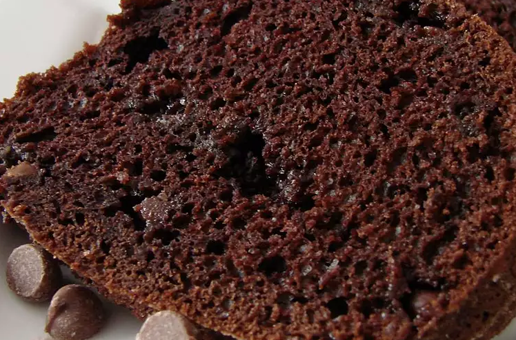

Chocolate Brownie Recipe

Description
Chocolate lovers beware! Very yummy! An easy Bundt cake made with cake mix, instant pudding, sour cream and chocolate chips!
Ingredients you need:
- 1 (18.25 ounce) package devil's food cake mix
- 1 (3.9 ounce) package instant chocolate pudding mix
- 4 eggs
- 1 cup sour cream
- ½ cup vegetable oil
- ½ cup water
- 2 cups semisweet chocolate chips
Steps
- Preheat oven to 350 degrees F (175 degrees C). Grease and flour a 10 inch Bundt pan. Have all ingredients at room temperature.
- In a large bowl, stir together cake mix and pudding mix. Make a well in the center and pour in eggs, sour cream, oil and water. Beat on low speed until blended. Scrape bowl, and beat 4 minutes on medium speed. Stir in chocolate chips. Pour batter into prepared pan.
- Bake in the preheated oven for 50 to 60 minutes, or until a toothpick inserted into the center of the cake comes out clean. Allow to cool.
Bon Appetit!